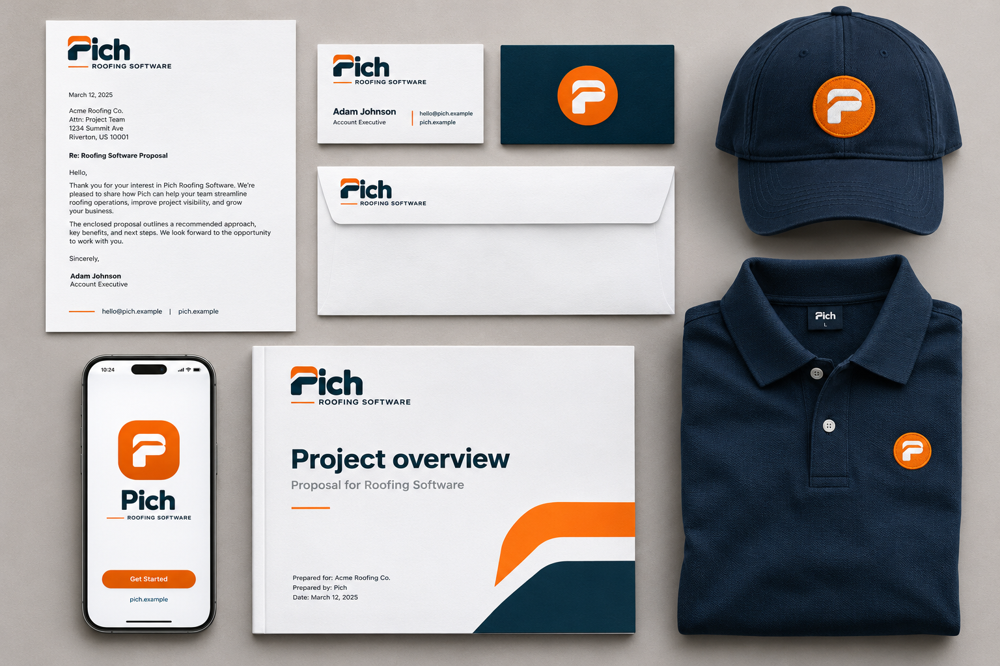

Pich / Brand identity / Draft 01 / November 2026
Built around a distinctive P.
A compact mark, a confident wordmark, and a quieter descriptor. Direction F pairs the name with an orange leading rule and right-aligned Roofing Software.
Draft raster assets on solid backgrounds. These are review files, not transparent vector production masters. Separate generations can differ slightly in shape. Exact production colors are specified below.
01 / Logo family
Use the descriptor for introductions and sales materials. Use the plain wordmark when context is established, and the P badge for compact placements. White-on-orange is the preferred circle treatment.
02 / Plain color swatches
Orange and Navy form the identity. White supplies breathing room; Cloud and Slate support documents and product layouts. The SVG swatches and JSON/CSS tokens contain exact values, unlike color approximations in generated artwork.
03 / Typography
Pich custom wordmark
Generated custom lettering, not an identified retail font. Retain it as artwork and create a single outlined master before final production.
Oxanium Medium · proposed descriptor font
ROOFING SOFTWARE
Squared geometry, medium weight, modest tracking. Keep the descriptor around 75% of the wordmark width and right aligned; place the orange leading rule in the remaining space.
Official source and SIL Open Font LicenseInter · supporting type family
Clear communication, from the office to the field.
Regular 400 for body copy; Medium 500 for labels; SemiBold 600 for headings. Use for contact details, correspondence, presentations, and product UI.
Official source and SIL Open Font LicenseThe two font families are proposed production choices, not identifications of generated raster lettering. Live specimens request Google Fonts when online; Arial is the fallback. Fonts are not bundled.
04 / Draft applications

Concept mockups, not print-ready files. Contact details are placeholders. Editable card and letterhead layouts are available in the stationery draft.
| Placement | Recommended treatment |
|---|
| Business cards | F lockup on white front; preferred orange badge on navy back. Name and contact details in Inter. |
| Letterhead and proposals | Small F lockup at upper left, ample white space, a restrained orange rule in the contact footer. |
| Hats and polos | Standalone P or orange circle patch. Omit the descriptor and proof embroidery at actual size. |
| App and social | White P on orange. Adapt the outside container to the platform's required mask without distorting the P. |
| Email signatures | Compact wordmark plus live name, role, and contact text; avoid rendering the entire signature as an image. |
05 / Use and handoff
Allow approximately one quarter of the P's height as clear space. Keep the diagonal channel open. Do not stretch the logo, add effects, or retype the wordmark. Drop the descriptor at small sizes.
Before production: approve one vector master, derive all variants from it, replace sample contact information, and proof print colors and embroidery. The generated transparent attempts had halos and are excluded from this package; the final review PNGs use clean solid backgrounds.
Created with built-in ImageGen for logo previews and mockups, plus deterministic HTML/CSS and SVG swatches. Prompts and asset checks are included in specifications/.